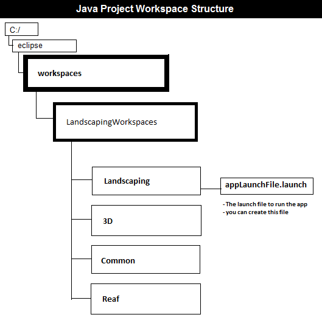
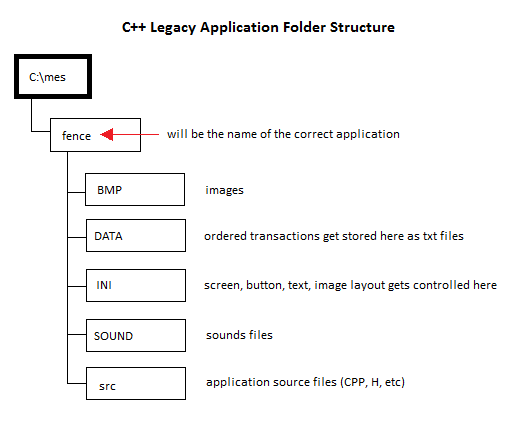

Because we still have to maintain and keep our legacy C++ apps, it is good to know the difference between our Java and C++ apps.
| Java | C++ |
|---|---|
| Java app workspaces can be located anywhere on our C:/ drive, however do not put the java workspaces under "My Documents" or where folders have a white space otherwise the app will not function properly. Java project workspaces is preferred to be put under C:/eclipse/workspaces/ vs C++ project workspace has to go under C:/mes/ |
All our C++ app workspaces are located under C:/mes folder to function properly |
| Eclipse (IDE) | Visual Studio 6 (IDE) |
|  |  |
| Material List (material.txt) created from using the application is generated to the C:/menards/matlist/ 24=Deck, 25=Landscaping |
Material List (material.txt) created from C++ application is generated to the C:/mes/applicationName/ each application use rewrites over the old material list file |